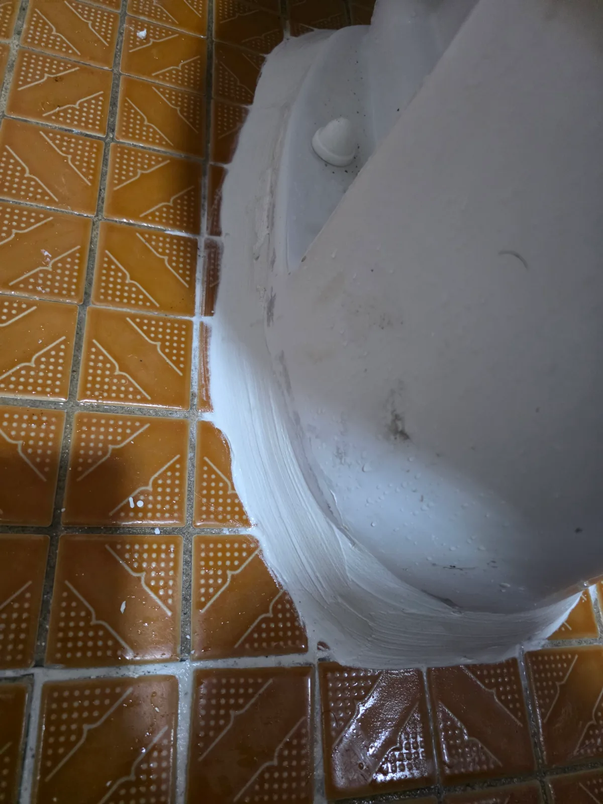

성동구 도선동 변기막힘, 현장 도착 후 진단
서울 성동구 도선동 변기막힘 요청을 접수한 뒤 필요한 장비를 준비해 현장으로 이동했습니다. 먼저 변기의 배수 상태를 살펴본 결과, 일반적인 물 내림만으로는 해소되지 않는 내부 막힘이 의심됐습니다.
변기막힘·싱크대막힘·하수구막힘을 전문적으로 처리하는 신라건축설비는 겉으로 나타난 증상만 보고 무리하게 작업하지 않습니다. 이물질의 위치와 막힘 상태를 단계적으로 확인하고, 현장 상황에 적합한 장비와 작업 방법을 선택합니다.
1단계: 증상 확인과 필요한 장비 작업
우선 변기를 철거하지 않은 상태에서 전문 석션기를 사용해 내부 이물질을 흡입했습니다. 그러나 충분한 석션 작업에도 막힘의 원인이 되는 물체가 밖으로 나오지 않았습니다.
이러한 경우 같은 작업을 무리하게 반복하면 이물질이 변기 트랩 안쪽에 더욱 단단하게 걸리거나 변기가 손상될 수 있습니다. 작업자는 석션만으로 해결하기 어렵다고 판단하고, 변기 탈거가 필요한 이유와 작업 방법을 고객에게 정확하게 설명했습니다.

2단계: 원인 구간 처리와 정상 작동 확인
고객에게 작업 내용을 안내한 뒤 변기를 안전하게 탈거했습니다. 분리한 변기를 뒤집고 내부 배수 통로를 향해 에어건 작업을 진행하자 예상하지 못했던 커다란 석박지 조각이 밖으로 빠져나왔습니다.
석박지는 단단하고 크기가 커서 변기의 굴곡진 트랩 구간을 통과하지 못하고 걸려 있었습니다. 이 때문에 강한 석션을 사용해도 외부로 흡입되지 않았던 것입니다. 단순 관통을 반복하지 않고 변기 구조와 이물질의 걸림 상태를 판단해 탈거와 에어건 작업으로 전환한 것이 핵심이었습니다.

작업 결과와 재발 방지 안내
변기 내부를 막고 있던 석박지를 직접 제거해 막힘의 원인을 해소했습니다. 김치 조각이나 깍두기·석박지처럼 단단하고 부피가 큰 음식물은 물과 함께 흘려보내더라도 변기 트랩을 통과하지 못하고 심한 변기막힘을 일으킬 수 있습니다.
변기에는 휴지와 배설물 외의 음식물이나 생활용품을 넣지 않는 것이 중요합니다. 석션이나 관통 작업으로 이물질이 나오지 않을 때는 무리하게 장비를 반복 사용하기보다 정확한 진단 후 변기 탈거 여부를 결정해야 손상과 재발 위험을 줄일 수 있습니다.
신라건축설비는 성동구 도선동을 비롯한 서울 전 지역과 경기권에 신속하게 출동해 변기막힘·싱크대막힘·하수구막힘을 전문적으로 해결합니다. 간단한 생활 막힘부터 변기 탈거, 석션, 관통, 배관 내시경검사, 샤프트, 고압세척은 물론 공용배관·오수관 진단과 배관 보수 및 대형 배관공사까지 현장 상황에 맞춰 자체적으로 대응합니다.
최종 조치: 석션으로 제거되지 않는 내부 이물질을 확인하기 위해 변기를 탈거한 뒤 뒤집어 에어건 작업을 진행했으며, 트랩 안쪽에 걸려 있던 석박지 조각을 밖으로 제거했습니다.
현장 방문 전 확인하는 비용과 작업 범위
신라건축설비는 현장 증상과 배관 구조를 확인한 뒤 필요한 작업과 예상 비용을 안내합니다. 단순 관통으로 해결되는지, 배관내시경·석션·고압세척 또는 변기 탈거가 필요한지는 현장 상태에 따라 달라집니다. 출장비와 야간 작업비, 추가 장비 비용이 발생할 수 있는 경우 작업 전에 먼저 설명하고 동의를 받은 범위에서 진행합니다.
업체를 선택할 때 확인할 사항
무조건적인 ‘0원’ 표현보다 실제 작업 범위, 추가 비용 조건, 사용 장비와 사후 대응 기준을 확인하는 것이 중요합니다. 해결되지 않았을 때의 비용 기준과 작업 후 동일 증상 발생 시 점검 범위를 사전에 문의해두면 불필요한 분쟁을 줄일 수 있습니다.
성동구 변기막힘 자주 묻는 질문
변기를 꼭 탈거해야 하나요?
변기 내부의 물이 원활하게 내려가지 않는 막힘 증상이 발생했으며, 석션 작업을 진행해도 막힘을 유발한 이물질이 밖으로 나오지 않았습니다.처럼 증상이 나타나더라도 원인은 현장마다 다를 수 있습니다. 장비와 배관 구조를 확인한 뒤 필요한 작업 범위를 안내합니다.
작업 전 비용을 알 수 있나요?
작업 전 증상과 현장 여건을 확인해 예상 범위와 비용을 먼저 안내합니다. 변기 탈거, 장비 추가 투입 또는 공용배관 작업이 필요한 경우 고객 동의 없이 임의로 진행하지 않습니다.
같은 증상이 다시 생기면 어떻게 하나요?
완료 후 정상 작동을 함께 확인하고 작업 범위에 따른 사후 안내를 드립니다. 동일 증상이 반복되면 현장 기록을 기준으로 원인을 다시 점검합니다.
변기막힘 서울·경기 출동지역
신라건축설비는 성동구 도선동 현장을 포함해 서울 25개 구와 경기도 31개 시·군의 배관 문제를 상담합니다. 현장 거리와 기사 배정 상황에 따라 출동 가능 여부를 먼저 안내드립니다.
서울 전 지역
강남구 · 강동구 · 강북구 · 강서구 · 관악구 · 광진구 · 구로구 · 금천구 · 노원구 · 도봉구 · 동대문구 · 동작구 · 마포구 · 서대문구 · 서초구 · 성동구 · 성북구 · 송파구 · 양천구 · 영등포구 · 용산구 · 은평구 · 종로구 · 중구 · 중랑구
경기도 주요 출동지역
수원시 · 용인시 · 고양시 · 화성시 · 성남시 · 부천시 · 남양주시 · 안산시 · 평택시 · 안양시 · 시흥시 · 파주시 · 김포시 · 의정부시 · 광주시 · 하남시 · 광명시 · 군포시 · 양주시 · 오산시 · 이천시 · 안성시 · 구리시 · 의왕시 · 포천시 · 양평군 · 여주시 · 동두천시 · 과천시 · 가평군 · 연천군